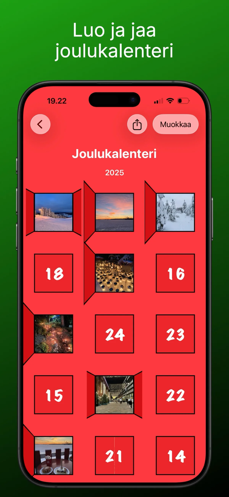
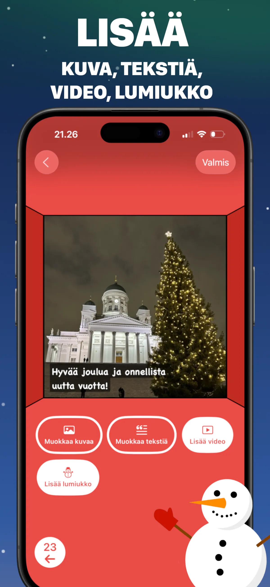
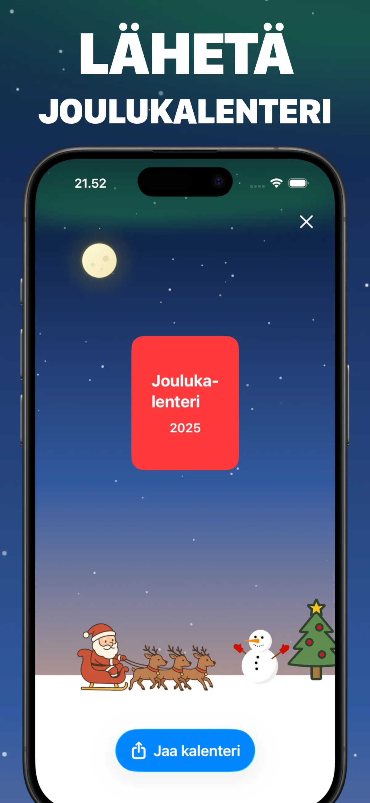
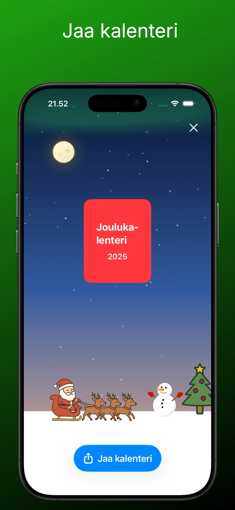
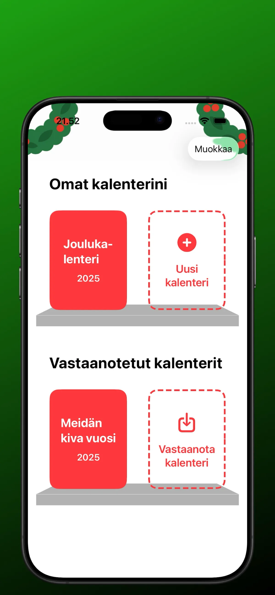

Oma joulukalenteri taskussa
Luo, koristele ja avaa yksi luukku päivässä — tältä sovellus näyttää.





Joulukalenteri valmiiksi kolmessa vaiheessa
Ei askartelutarvikkeita, ei tulostinta, ei kirjautumista — vain puhelin ja 24 pientä yllätystä.
Tee kalenteri
Aloita uusi kalenteri ja täytä jokainen 24 luukusta valokuvalla, viestillä, videolla tai lumiukolla. Yhdistele vapaasti — jokainen luukku voi olla erilainen.
Jaa se läheisellesi
Lähetä kalenteri yhtenä tiedostona AirDropilla, WhatsAppilla, Telegramilla tai sähköpostilla. Saaja avaa sen ilmaisella sovelluksella iPhonella, iPadilla tai Macilla — tiliä ei tarvita.
Avaa luukku päivässä
1. joulukuuta alkaen aukeaa yksi luukku päivässä, ja viimeinen luukku odottaa jouluaattona. Kurkkimaan ei pääse — siinä on koko idea.
Joulukalenterin oppaat ja ideat
Kaikki mitä tarvitset kalenterin suunnitteluun, luukkujen täyttämiseen ja lähettämiseen.
Itse tehty joulukalenteri — näin teet sen puhelimella 10 minuutissa
Täydellinen vaiheittainen ohje ilman askartelutarvikkeita.
Lue opas → IdeatMitä laittaa joulukalenteriin? 24+ ideaa luukkuihin
Ideat puolisolle, lapselle, vanhemmille, kaverille ja työkaverille.
Lue opas → EkologinenAineeton joulukalenteri — 24 ideaa ilman tavaraa
Ekologinen kalenteri, josta ei jää nurkkiin muovia eikä karkkipapereita.
Lue opas → LapsilleJoulukalenteri lapselle ilman karkkia
Turvallinen, mainokseton — eikä luukkuja pääse kurkkimaan.
Lue opas → ParisuhdeJoulukalenteri puolisolle — myös kaukosuhteeseen
24 päivittäistä yllätystä, jotka kuroa välimatkan umpeen.
Lue opas → ValokuvatValokuvajoulukalenteri — 24 muistoa luukkujen taakse
Omat kuvat tekevät kalenterista henkilökohtaisen lahjan.
Lue opas → PerheJoulukalenteri mummolle ja papalle
Lähetä isovanhemmille annos lastenlapsia joka päivä.
Lue opas → SovellusJoulukalenterisovellus — montako päivää jouluun?
Laskuri, jossa on luukku jokaiselle päivälle.
Lue opas → PerustiedotJoulukalenteri vai adventtikalenteri? Historia ja ero
Mistä perinne tuli Suomeen ja milloin luukut avataan.
Lue opas →Usein kysytyt kysymykset
Miten teen joulukalenterin itse puhelimella?
Lataa ilmainen Advent Maker App Storesta, valitse Uusi kalenteri ja täytä 24 luukkua valokuvilla, teksteillä, videoilla tai lumiukolla. Tiliä ei tarvita — useimmilta se vie noin kymmenen minuuttia. Lue lisää →
Voinko käyttää omia valokuvia joulukalenterissa?
Kyllä — jokaiseen luukkuun voi laittaa kuvan omasta kuvakirjastosta, jolloin 24 muistoa muuttuu valokuvajoulukalenteriksi. Kuviin voi yhdistää kuvatekstin ja videon. Lue lisää →
Miten lähetän joulukalenterin toiselle paikkakunnalle tai ulkomaille?
Valitse Jaa kalenteri ja lähetä tiedosto AirDropilla, WhatsAppilla, Telegramilla tai sähköpostilla. Saaja avaa sen ilmaisella sovelluksella — täydellinen kaukosuhteeseen ja ulkomailla asuvalle perheelle. Lue lisää →
Onko Advent Maker ilmainen joulukalenterisovellus?
Täysin ilmainen: ei ostoksia, ei tilausmaksua, ei mainoksia, ei kirjautumista. Kalenterien tekeminen ja jakaminen ei maksa mitään. Lue lisää →
Mitä joulukalenterin luukkuihin kannattaa laittaa?
Perhekuvat, lyhyet videot, YouTube-linkit, päivittäiset viestit tai vitsit, vuoden muistot ja lumiukko ovat suosikkeja. Säästä jotain erityistä 24. luukkuun. Lue lisää →
Sopiiko sovellus lapselle?
Kyllä — ikäraja 4+, ei mainoksia, ei chattia, ei tiliä eikä tiedonkeruuta. Luukut aukeavat päivä kerrallaan, joten kurkkimaan ei pääse. Lue lisää →
Milloin joulukalenterin luukut aukeavat?
Yksi luukku päivässä 1. joulukuuta alkaen, viimeinen jouluaattona 24.12. Sovellus näyttää, montako päivää seuraavaan luukkuun ja jouluun on jäljellä. Lue lisää →
Tarvitseeko saajan luoda tili?
Ei. Saaja asentaa ilmaisen sovelluksen ja avaa lähettämäsi kalenteritiedoston — ei rekisteröitymistä, ei henkilötietoja. Toimii iPhonella, iPadilla ja Macilla. Lue lisää →
Mikä on ero joulukalenterin ja adventtikalenterin välillä?
Joulukalenterissa on 24 luukkua 1.–24. joulukuuta. Adventtikalenteri seuraa neljää adventtisunnuntaita, joista ensimmäinen voi olla jo marraskuussa. Advent Makerilla teet 24 luukun joulukalenterin. Lue lisää →
Jonkun joulukuusta on tulossa parempi.
Tee oma joulukalenteri tänään — se on ilmaista, vie minuutteja, ja hän saa avata siitä pienen palan joka päivä jouluaattoon asti.